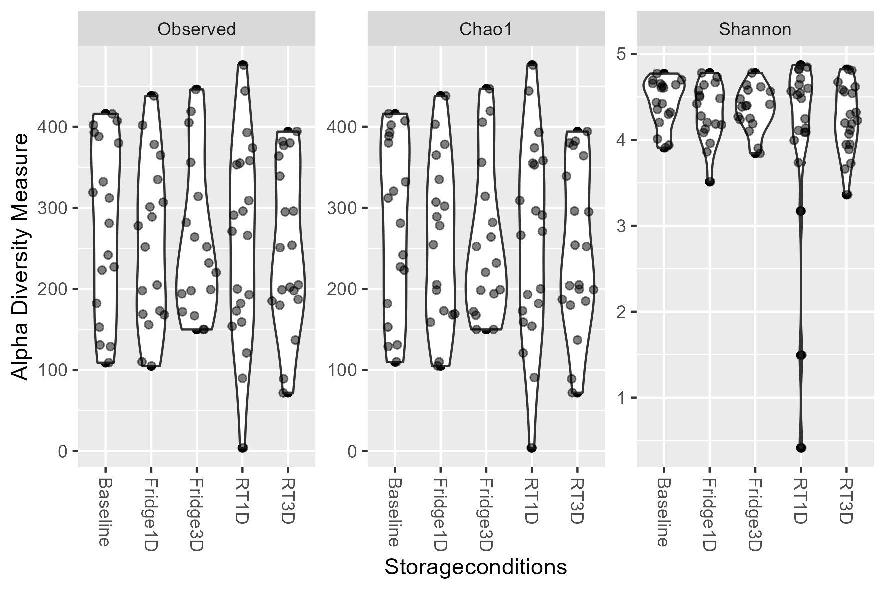
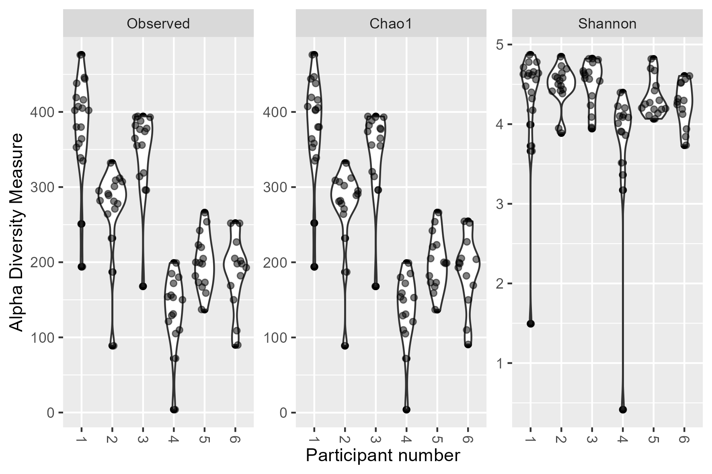
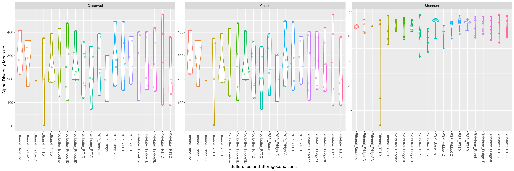

Chapter 9 Supp figure 3
Alpha diversity plots of samples using the preprocessed unrarified abundance values.
9.2 Alpha diveristy plots
9.2.1 S3A: Storage conditions
p <- plot_richness(physeq, x = "Storageconditions",
measures = c("Observed","Chao1","Shannon")) +
geom_violin() +
ggforce::geom_sina(alpha=0.5)
ggsave(plot = p,
filename = "./figures/alpha_diversity_Storageconditions.png",
device = "png", units = "mm", height = 100, width = 150)
9.2.2 S3B: Patient number
p <- plot_richness(physeq, x = "Patientnumber",
measures = c("Observed","Chao1","Shannon")) +
geom_violin() +
ggforce::geom_sina(alpha=0.5)
ggsave(plot = p,
filename = "./figures/alpha_diversity_patient.png",
device = "png", units = "mm", height = 100, width = 150)
9.2.3 S3C: Storage temp
p <- plot_richness(physeq, x = "Storagetemp",
measures = c("Observed","Chao1","Shannon")) +
geom_violin() +
ggforce::geom_sina(alpha=0.5)
ggsave(plot = p,
filename = "./figures/alpha_diversity_Storagetemp.png",
device = "png", units = "mm", height = 100, width = 150)
9.2.4 S3D: Buffer and storage
p <- plot_richness(physeq, x = "Bufferused_and_Storageconditions",
color="Bufferused_and_Storageconditions",
measures = c("Observed","Chao1","Shannon")) +
geom_violin() +
ggforce::geom_sina(alpha=0.5) +
theme(legend.position="none")
# geom_point(size = 3)
ggsave(plot = p,
filename = "./figures/alpha_diversity_Bufferused_and_Storageconditions.png",
device = "png", units = "mm", height = 150, width = 450)